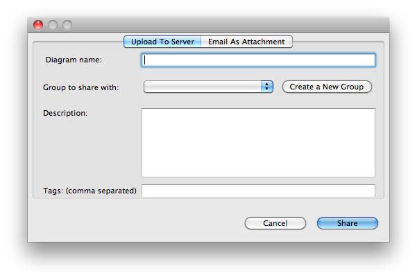

Share Online
To share a diagram with others you can use the Architexa collaboration server. The following the steps to do this:- Once you have created a diagram click the Architexa Collaboration (
 ) icon in the toolbar and select the "Share Diagram" option or go to "File > Share Diagram"
) icon in the toolbar and select the "Share Diagram" option or go to "File > Share Diagram" - This will pop up a dialog box with tabs "Upload To Server" and "Email As Attachment".
- Using the "Upload To Server" tab enter the necessary information in the dialog box.
 - A diagram can be added to an existing Group (listed in the drop down menu) or you can create a new group using the "Create a New Group" option.
- Enter a name and description for your diagram.
- Add any appropriate tags to make you diagram easier to find.
- Once you have entered the needed information press create to share the diagram on the server by clicking 'Share'.
- A confirmation dialog will show providing a url link to the shared diagram.
---- Your question not answered? Send an email to support@architexa.com ----